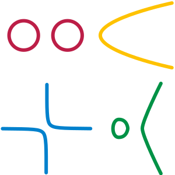

Geometria differenziale
Varietà
Una varietà è una "superficie" generalizzata, vale a dire un'iper-superficie di n dimensioni, che localmente è simile ad uno spazio euclideo della stessa dimensione.
Esempi: Una retta, un cerchio o una parabola sono verietà a una dimensione, mentre un piano, la superficie di una sfera, o di un toro sono varietà a 2 dimensioni. Lo spazio che ci circonda è un esempio di una varietà tridimensionale, come potrebbe essere lo spazio interno di una ciambella. Tutte queste forme da vicino somigliano ad uno spazio euclideo. Una figura a 8 non è una varietà, poichè il punto di intersezione tra le linee ha una geometria che localmente non può essere approssimata a una geometria euclidea.
|  | Figura 1 Quest'immagine, tratta spudoratamente da Wikipedia, mostra vari esempi di varietà unidimensionali. Una varietà può essere composta anche da pezzi distinti, ma non può autointersecarsi, poiché altrimenti nei punti di intersezione la geometria sarebbe localmente non euclidea. |
Una varietà è un insieme M di punti a cui è collegato un altro insieme, detto atlante, di carte locali. Come la superficie della terra (che è una varietà bidimensionale) non può essere rappresentata interamente da una sola carta geografica (per esempio una comune carta geografica omette i poli) ed è necessario suddividere la superficie in parti chiamate carte e metterle in un atlante, anche in una generica verietà è necessario suddividere la superficie in pezzi e raccogliere i vari pezzi in un insieme, in modo da descrivere tutta la superficie.
Matematicamente ogni carta è data da un sottoinsieme \( U \subset M \) e da una funzione iniettiva \( \phi: U -> R^n \) che associa ogni punto di U ad uno spazio euclideo, fornendo in tal modo un sistema di coordinate. Una carta è quindi una coppia \( (U, \phi) \).
È chiaro che possono esserci un infinità di diversi atlanti per la stessa varietà.
Due carte \( (U, \phi) \) e \( (V, \psi) \) possono anche sovrapporsi e descrivere la stessa parte di "superficie". In questo caso le carte locali devono essere compatibili, cioè le funzioni \( \phi \circ \psi^{-1} \) e \( \psi \circ \phi^{-1} \) devono essere continue (questo deve valere nell'intersezione \( U \cap V \) naturalmente). Queste funzioni trasformano le coordinate di una carta in quelle dell'altra, e sono chiamate funzioni di transizione.
Dal punto di vista matematico c'è anche qualche altra richiesta topologica, ma a meno di casi patologici, i concetti sono tutti qui e non mi addentro oltre.
Varietà differenziabile
Una varietà differenziabile è una varietà topologica (quella descritta precedentemente), con la differenza che è possibile usare tutti gli strumenti dell'analisi su di essa (derivate, integrali, equazioni differenziali, campi vettoriali, etc.). Questo si ottiene richiedendo che le funzioni di transizione siano differenziabili. Una varietà di classe \( C^k \) ha tutte le funzioni di transizione di class \( C^k \).
Sottovarietà
Una sottovarietà N è una varietà che si ottiene come sottoinsieme di un altra varietà, ha dimensione minore ed eredita la topologia e l'atlante della varietà madre. Chiaramente le carte locali devono essere ristrette al sottoinsieme N (basta prendere \( U \cap N\) invece di U).